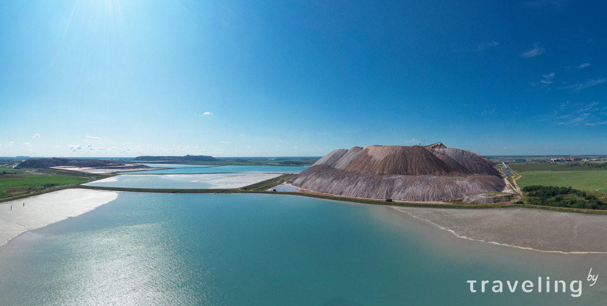
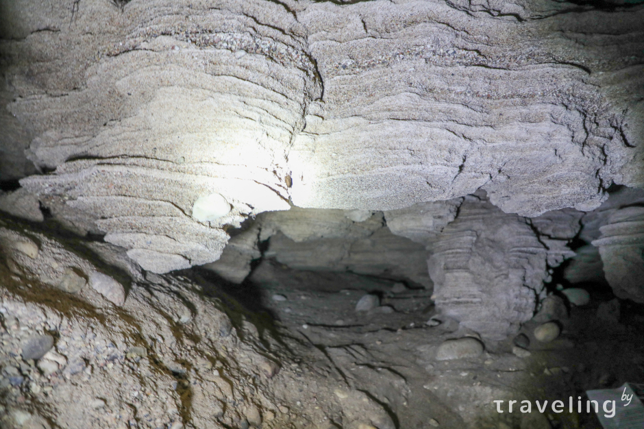
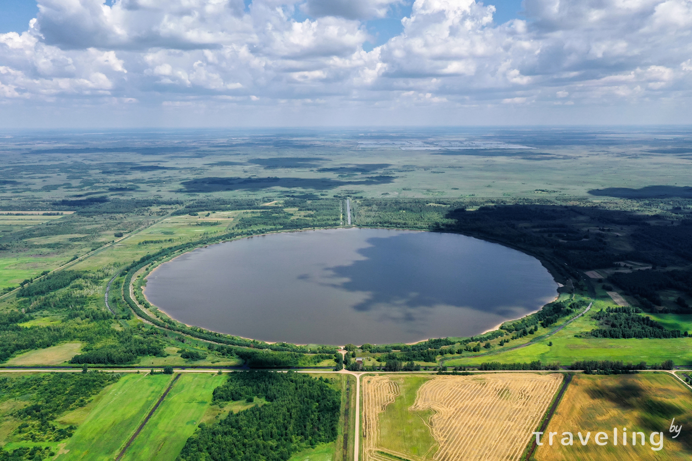
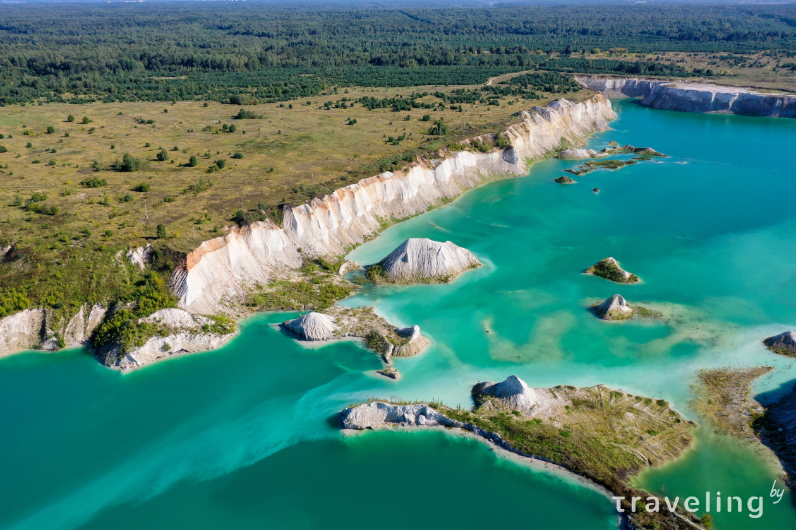
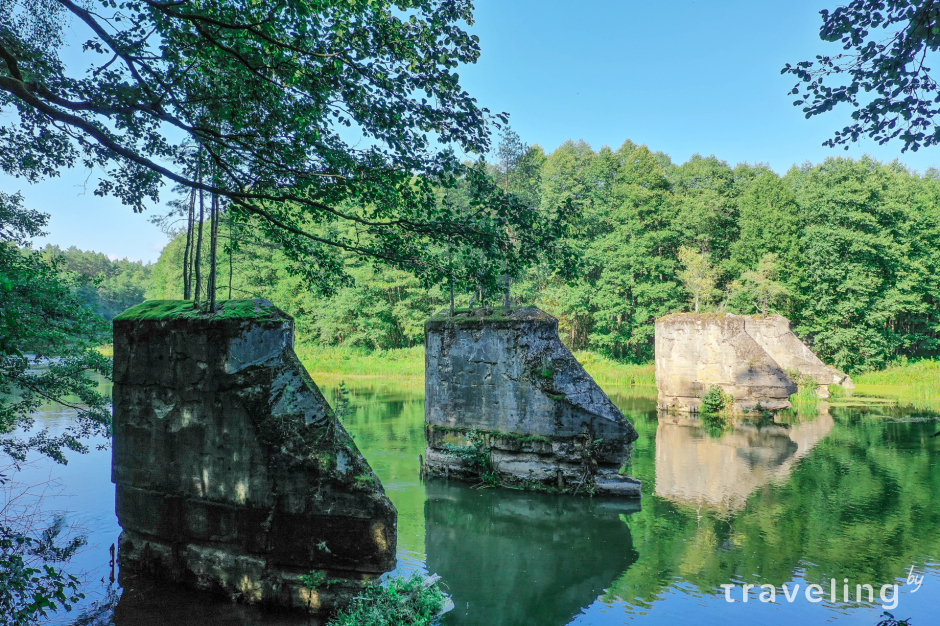
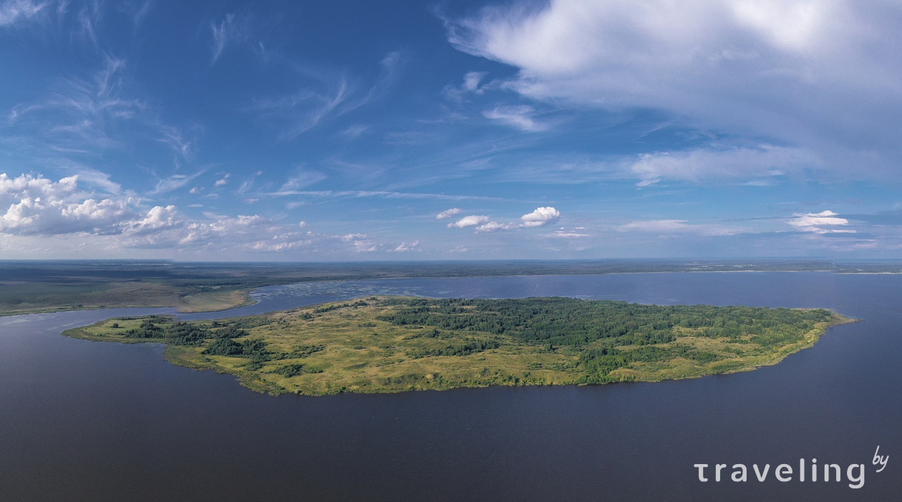

Солигорские терриконы
Это отходы добычи калийных удобрений «Беларуськалия» — глина с солью и гипсом, песок. Но благодаря высоте почти в 120 метров создается впечатление, что перед вами небольшая горная гряда. Вода вокруг терриконов представляет собою концентрированный рассол, из-за чего многие сравнивают ее с водой Мертвого моря. Терриконы находятся они на территории технических объектов и не приспособлены для массовых посещений людьми.
Единственная пещера Беларуси
Карстовая пещера глубиной 10 метров, как предполагают ученые, образовалась 25 тысяч лет назад после Поозерского оледенения. Она вымыта в песчанике, поэтому у смельчаков, которые туда таки забрались, появляется стойкое ощущение, будто стены вот-вот осыплются. Лаз в пещеру довольно узкий, но внутри способны уместиться 3 человека. Погулять под сводами не удастся, но для жителей равнинной Беларуси это интересный спелеологический опыт. Находится единственная относительно известная белорусская пещера в 30 метрах от озера Гиньково, возле деревни Сахновичи Глубокского района.
Круглое озеро возле деревни Повитье
В 2,5 км на север от деревни Повитье в Кобринском районе находится идеально круглое озеро. Этот рукотворный водоём был создан в 90-е годы прошлого века для выполнения конкретной задачи — «принимать на себя» воду с близлежащих мелиоративных каналов. Подобные озера есть еще в Ивановском, Берёзовском и Гомельском районах. Во всех случаях круглая форма — не более чем инженерное решение. Хотя на форумах до сих пор гуляют конспирологические версии появления «кругов»: от ядерных испытаний до тестирования советской глобальной навигационной спутниковой системы.
Кричевские Мальдивы
За почетное звание «белорусских Мальдив» борются как минимум, затопленные меловые карьеры под Волковыском, Любанью и Гродно. Однако самые масштабные и впечатляющие «Мальдивы» находятся на востоке Беларуси, в паре километров от Кричева, рядом с предприятием «Кричевцементношифер». Купаться в техническом объекте запрещено: вода с мелом не соответствует санитарным нормам и может вызывать раздражение кожных покровов, да и резкие, до 20 метров, обрывы точно не способствуют безопасному купанию. Придется ограничиться парой-тройкой фото, аккуратно поднявшись на отвал.
Мост через Вилию времен Первой мировой войны
Руины моста через Вилию в Сморгонском районе известны велопутешественникам и байдарочникам, но массовых туристов здесь не встретишь. Мост был построен во время Первой мировой войны, в 1915 году: к этому времени линия фронта стабилизировалась и обе стороны решали вопрос со снабжением войск. Так появился Тупальский мост, через который немцы проложили узкоколейную железную дорогу. Из 8 опор до наших дней сохранились 7: 5 все еще возвышаются на водой, одна упала в воду, еще одна вросла в берег. В 2019 году в этих местах снимали белорусский триллер «Запретная зона».
Остров Ду
Самый большой остров Беларуси представляет собой 5 квадратных километров суши на Освейском озере. В дебрях острова живут волки олени, лоси, по берегам гнездятся лебеди, чайки и другие птицы. Редкий турист нарушает спокойствие этого уголка. А еще лет 50 назад на острове жили люди — здесь функционировали колхоз, сельский клуб, магазин, начальная школа. Но глобализация сделала свое дело и со временем все жители Ду переселились на «большую землю». Чтобы попасть на остров сегодня нужно заранее согласовать посещение с заказником «Освейский».
